Stop 1
J.J. Donovan's
The starting line. Optimism is high. Hydration choices are already questionable.
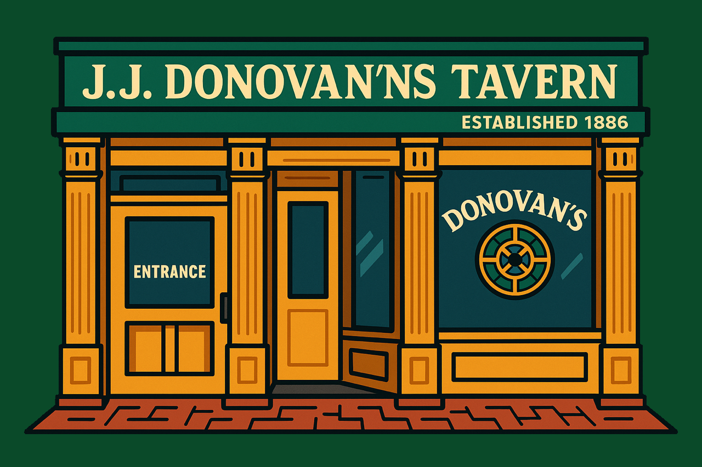
The first Boston Beer Marathon route. Ten stops, one finish line, and just enough questionable judgment to turn a dumb idea into a tradition.
Run the whole thing, run part of it, or use it as a highly inefficient guide to drinking your way across Boston.
The starting line. Optimism is high. Hydration choices are already questionable.

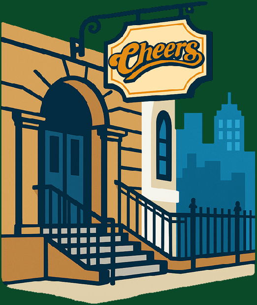
Touristy? Sure. Iconic? Absolutely. Sometimes obvious stops are obvious for a reason.
The Fenway checkpoint. Bonus points if there's a game and the city tries to trap you.
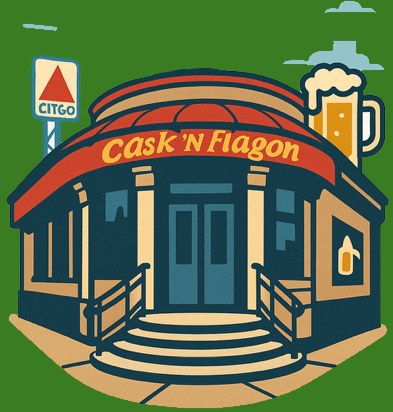
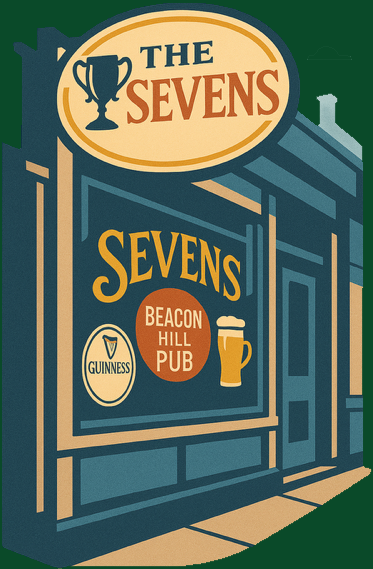
A proper Boston bar stop. Small, classic, and exactly the right kind of questionable.
Old, historic, and somehow still willing to let people like us through the door.
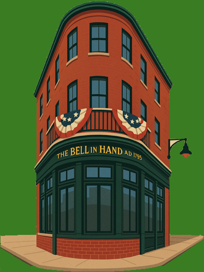
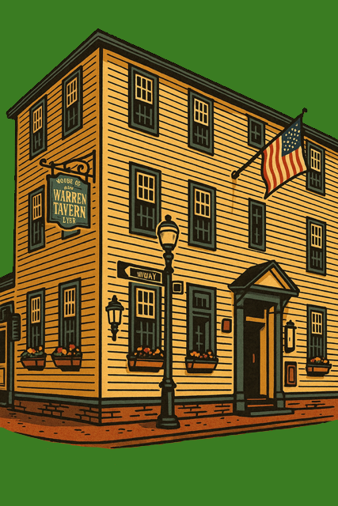
History, beer, and the growing realization that this route is not getting shorter.
The mood-check stop. Every course needs one place that tests the spirit.
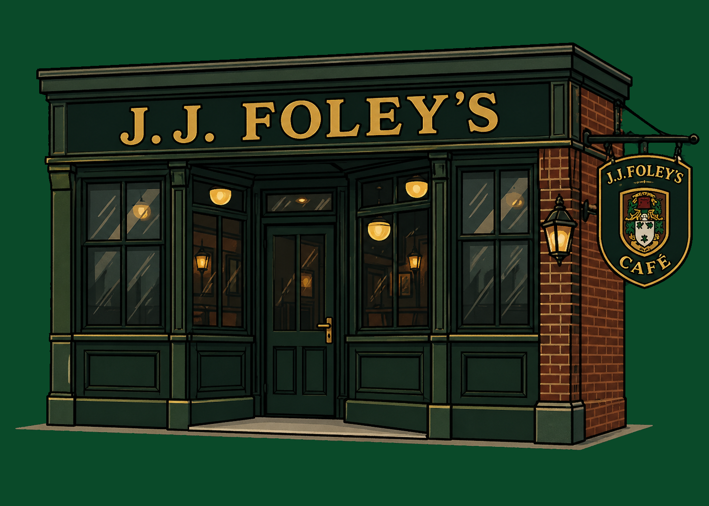
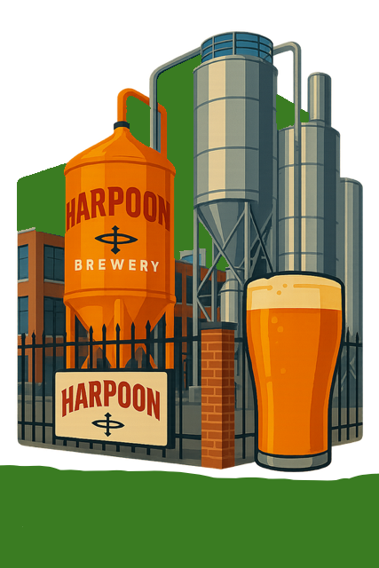
A brewery stop, a reset point, and a reminder that food planning matters.
If you make it here, strangers may start recognizing your poor decisions in public.
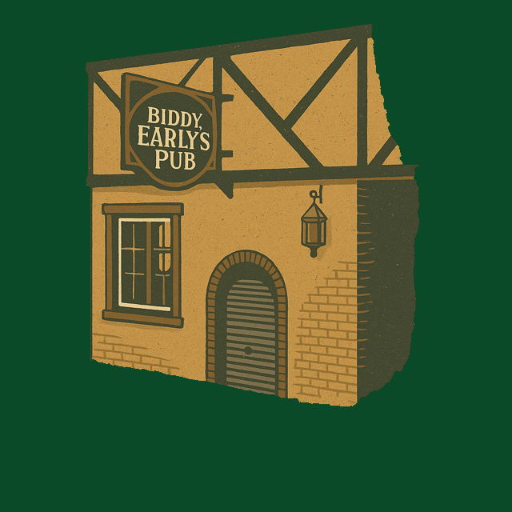
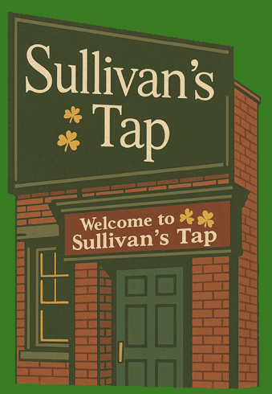
Late-course energy. Feet hurt. Spirits weirdly improve. Nobody knows why.
The finish line. Redemption, relief, and maybe one more beer because apparently lessons were not learned.
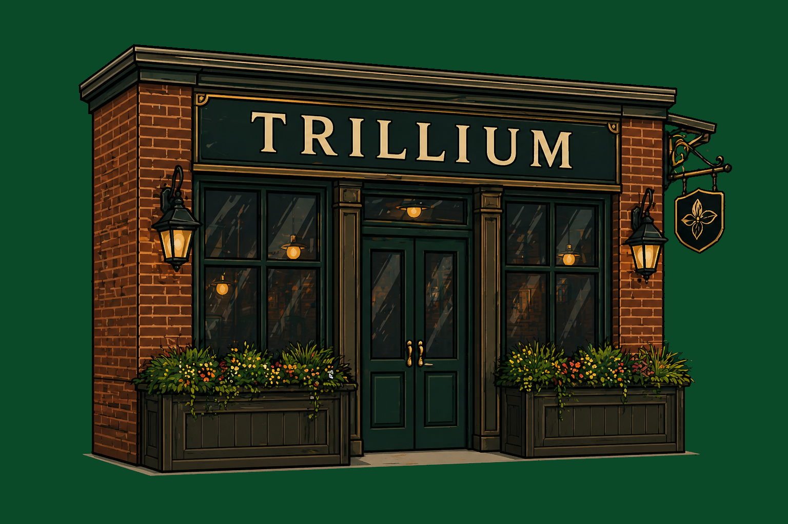
The classic Boston Beer Marathon tee, for the route where bad decisions were born.
Order the Original Shirt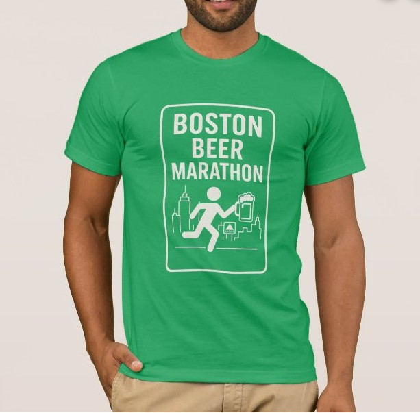
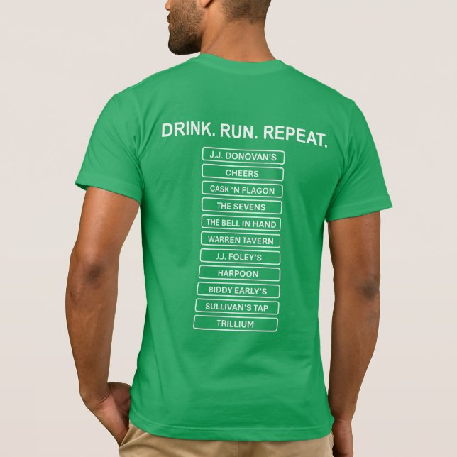